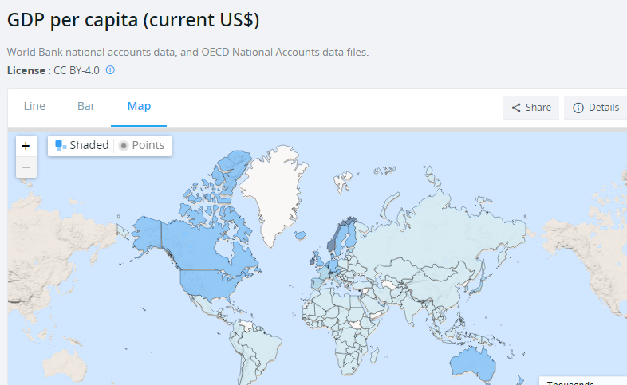
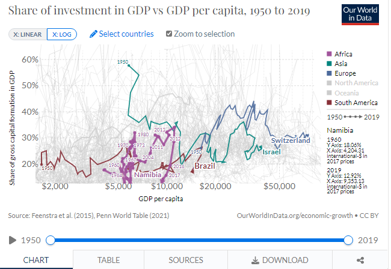
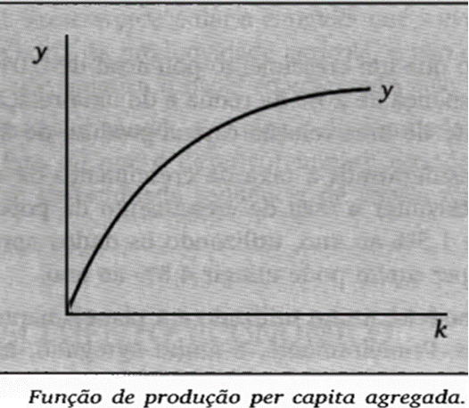
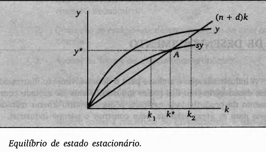
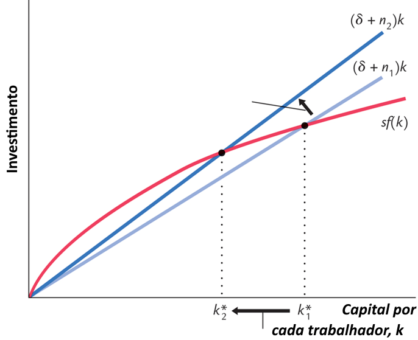
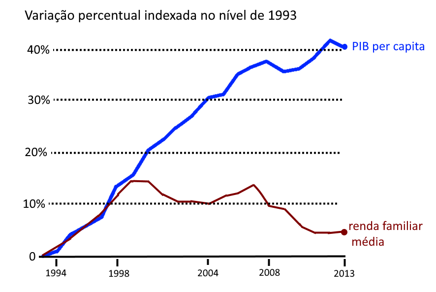
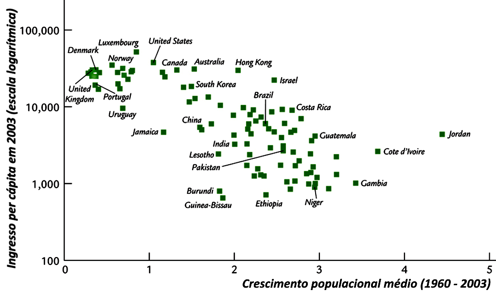

Do crescimento da renda ao desenvolvimento humano
A aula desloca o foco da macroeconomia de curto prazo — atividade, emprego e preços — para as estratégias de longo prazo. A pergunta central passa a ser: por que algumas economias conseguem elevar de modo sustentado a renda per capita e o bem-estar, enquanto outras permanecem presas a baixos níveis de produtividade?
trabalho, capital e capital humano
tecnologia e organização
renda + bem-estar econômico e social
Ideia-força: crescer é aumentar a renda per capita; desenvolver é transformar esse crescimento em melhores condições de vida.
Crescimento não é sinônimo de desenvolvimento
Crescimento econômico
É o crescimento contínuo da renda per capita ao longo do tempo.
É, portanto, um conceito essencialmente quantitativo.
Desenvolvimento econômico
É um conceito qualitativo, ligado à melhora dos indicadores de bem-estar econômico e social.
Exemplos: pobreza, desemprego, desigualdade, saúde, nutrição, educação e moradia.
Horizonte de análise
A macroeconomia conjuntural se ocupa de estabilização no curto prazo. A teoria do crescimento e do desenvolvimento olha para o produto potencial, o pleno emprego dos recursos e as estratégias de longo prazo para um crescimento equilibrado e autossustentado.

De onde vem o crescimento econômico?
Trabalho
Aumento da força de trabalho por crescimento demográfico ou imigração.
Capital físico
Aumento do estoque de máquinas, equipamentos, infraestrutura e capacidade produtiva.
Capital humano
Melhoria da qualidade da mão de obra por educação, capacitação e treinamento.
Tecnologia
Aumenta a eficiência com que capital e trabalho são utilizados.
Organização
Interação mais eficiente entre insumos e processos.
Financiamento
Poupança doméstica e poupança externa financiam a acumulação de capital.
O círculo difícil dos países de baixa renda
A aula chama atenção para um problema clássico: é difícil acumular capital físico e humano quando a renda é baixa. E, sem acumulação e produtividade, a própria renda cresce lentamente. A restrição não some com boa vontade — é preciso romper o círculo.

Capital por trabalhador e estado estacionário
O modelo de Solow–Swan resume uma ideia poderosa: a renda por trabalhador depende do capital por trabalhador, mas a acumulação de capital enfrenta depreciação, crescimento populacional e rendimentos decrescentes.
Função por trabalhador
y = produto por trabalhador; k = capital por trabalhador.
Poupança e investimento
A poupança é uma fração s da renda e financia integralmente o investimento agregado.


Condição de estado estacionário
s·y representa a poupança/investimento por trabalhador; n é o crescimento da população e d a depreciação.
Se o capital estiver abaixo de k*
Quando s·y > (n+d)k, o capital por trabalhador aumenta, elevando também a renda per capita durante a transição.
Convergência
A dinâmica sugere que economias com baixo capital inicial podem crescer mais rapidamente rumo ao estado estacionário, embora essa convergência dependa das condições estruturais de cada economia.

Por que só acumular máquinas não basta?
Tecnologia em Solow
Na formulação tradicional, a tecnologia aparece como fator exógeno. Ela permite elevar a produtividade sem depender apenas de acumular cada vez mais capital físico.
Crescimento endógeno
Autores como Robert Lucas e Paul Romer colocam capital humano, aprendizado, conhecimento e inovação no centro do crescimento sustentado.
Evidências citadas na aula
Solow (1957): no estudo sobre os EUA entre 1909–1949, grande parte do crescimento da produção per capita foi atribuída ao progresso tecnológico.
Schultz (1961): destaca a contribuição do investimento em educação.
Lucas: enfatiza externalidades positivas do conhecimento e aprendizagem.
Capital humano
É o conjunto de conhecimentos, habilidades e capacidades que possuem valor econômico para organizações e países.
Competência
A aula sintetiza competência em três dimensões:
Conhecimentos — saberHabilidades — saber fazerAtitudes — querer fazer


Tecnologia e mercado de trabalho
A aula diferencia trabalhos rotineiros, mais passíveis de automação, de trabalhos não rotineiros, que exigem interação, criatividade, julgamento e conhecimento especializado. Desenvolvimento econômico também muda a estrutura do emprego.
Como os países tentam acelerar sua trajetória?
Industrialização
Ampliação da estrutura produtiva e aumento da produtividade, com papel relevante do investimento.
Substituição de importações
Estratégia associada especialmente às décadas de 1950 e 1960, buscando internalizar a produção antes importada.
Abertura e exportações
A aula contrasta essa estratégia com experiências de maior abertura comercial e integração ao mercado internacional.
Exemplo da aula — Tigres Asiáticos
Coreia, Taiwan, Hong Kong e Cingapura são apresentados como exemplos associados a abertura comercial, poupança elevada, forte investimento em educação e políticas fiscais cuidadosas.
Restrição demográfica
Elevado crescimento populacional pode diluir o estoque de capital e reduzir a renda per capita, motivo pelo qual a dinâmica populacional aparece como variável importante nos modelos de crescimento.
O que precisa ficar
20 questões para revisar a aula
As questões são predominantemente respondíveis a partir do material da aula, com algumas de integração e aplicação.